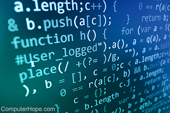

Menu
Berita

Dilansir dari laman Wikipedia, pemrograman atau programming adalah proses menulis, menguji dan memperbaiki (debug), dan memelihara kode yang membangun suatu program komputer. Kode ini ditulis dalam berbagai bahasa pemrograman atau sering
disebut juga bahasa komputer. Tujuan dari pemrograman adalah untuk memuat suatu program yang dapat melakukan suatu perhitungan atau ‘pekerjaan’ sesuai dengan keinginan pemrogram. Untuk melakukan pemrograman, diperlukan keterampilan
dalam algoritma, logika, bahasa pemrograman, dan pada banyak kasus, pengetahuan-pengetahuan lain seperti matematika.
Pemrograman adalah suatu cara dalam membuat satu atau menghubungkan lebih dari satu algoritma dengan menggunakan
suatu bahasa pemrograman tertentu sehingga menjadi suatu program komputer. Ada banyak bahasa pemrograman yang dapat digunakan seperti bahasa C, C++, Java, Phyton, dan lain-lain. Setiap bahasa memiliki gaya yang berbeda-beda dalam penggunaannya
sehingga memiliki gaya pemrograman yang berbeda pula. Gaya pemrograman ini biasa disebut dengan paradigma pemrograman. Orang yang pandai atau yang menggunakan bahasa pemrograman sering disebut seorang Pemrogram atau Programmer.
Sumber : https://kominfo.bengkulukota.go.id/apa-itu-pemrograman/